Plotting with ggplot2
What Is This Tutorial? What’s ggplot2?
ggplot2 is a package in R that allows for highly customizable and pretty plots! Here, were going to learn a few basics of making plots using ggplot2 that will hopefully get you well on your way to making informative and beautiful data visualizations!
Links to Files
The files for all tutorials can be downloaded from the Columbia Psychology Scientific Computing GitHub page. This particular file is located here: /content/tutorials/r-core/4-plotting/index.rmd.
Load Packages and Data
First load tidyverse, which includes ggplot2
We’ve already done this in the special first chunk up top, so it should run automatically before you run any chunk of code lower in the document.
Load in sample data
We’re going to practice here on a dataset from the 1990 NHANES (National Health and Nutrition Examination Survey). The variables are below.
Region - Geographic region in the USA: Northeast (1), Midwest (2), South (3), and West (4)
Sex - Biological sex: Male (1), Female (2)
Age - Age measured in months (we’ll convert this to years below)
Urban - Residential population density: Metropolital Area (1), Other (2)
Weight - Weight in pounds
Height - Height in inches
BMI - BMI, measured in kg/(m^2)
nhanes <- read_csv(here("content", "tutorials", "r-core", "4-plotting", "NHANES1990.csv"))## Parsed with column specification:
## cols(
## Region = col_double(),
## Sex = col_double(),
## Age = col_double(),
## Urban = col_double(),
## Weight = col_double(),
## Height = col_double(),
## BMI = col_double()
## )nhanes <- mutate(nhanes,
Age = Age/12, # convert age to years
Urban = dplyr::recode(Urban, '1' = 'Metro Area', '2' = 'Non-Metro Area'),
Region = dplyr::recode(Region, '1' = 'Northeast', '2' = 'Midwest', '3' = 'South', '4' = 'West'))
nhanes## # A tibble: 27,821 x 7
## Region Sex Age Urban Weight Height BMI
## <chr> <dbl> <dbl> <chr> <dbl> <dbl> <dbl>
## 1 South 2 42.8 Non-Metro Area 172. 65.3 28.4
## 2 West 1 25.6 Non-Metro Area 155. 62.3 28.2
## 3 West 2 73.8 Metro Area 167. 59.2 33.5
## 4 West 1 38.2 Metro Area 225. 71.9 30.6
## 5 Midwest 1 74 Non-Metro Area 245 67.7 37.6
## 6 West 2 2.75 Metro Area 28.3 35.2 16
## 7 Midwest 1 3.25 Metro Area 29.3 38.6 13.8
## 8 South 1 17.4 Non-Metro Area 188. 57.9 39.5
## 9 Midwest 1 4.08 Metro Area 36.6 41.9 14.7
## 10 West 2 48.2 Non-Metro Area 182. 61.9 33.5
## # … with 27,811 more rowsBasic ggplot2 Syntax
-ggplot() command usage including saving to a variable with a <- ggplot()
-The general format is ggplot(data, aes(x = [x axis variable], y = [y axis variable])
- x and y variables are always specified in this aes() subfunction
Run this line of code:
ggplot(nhanes, aes(x = Age, y = Weight))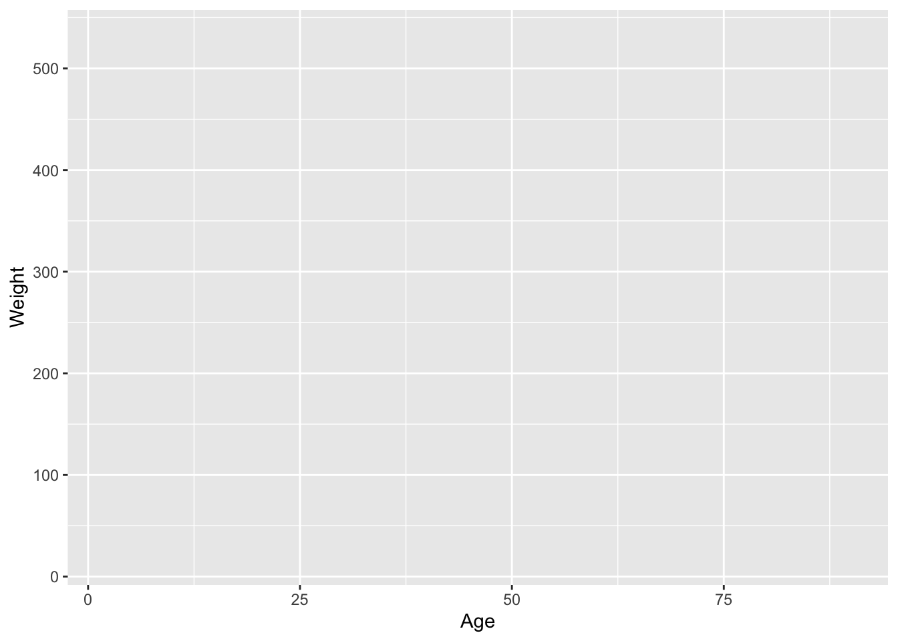
- Axes are set up the way we’d expect, and seem to have sensible values
- Why is nothing on this graph yet? we haven’t put any graphic actually on the axes yet
We need to tell the ggplot() call what kind of graphic to put on the axis
- A lot of the time, the syntax is
geom_[something]
Example Plot Types
Scatter plots
Let’s do scatter with geom_point() first.
ggplot(nhanes, aes(x = Age, y = Weight)) + geom_point()
Wow, lots of data points! Maybe we can make the points smaller to see better.
ageWeightPlot <- ggplot(nhanes, aes(x = Age, y = Weight)) +
geom_point(size = .1, alpha = .3)
ageWeightPlot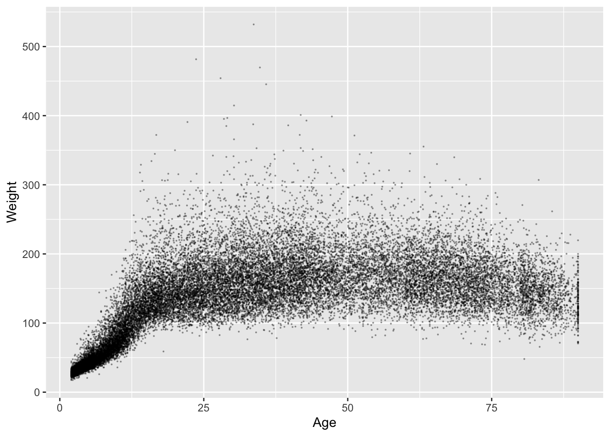
Remember, it’s a good habit to save your plots to objects, not just draw them!
ageWeightPlot <- ggplot(nhanes, aes(x = Age, y = Weight)) +
geom_point(size = 1, alpha = .2, aes(color = Region, pch = Region))
ageWeightPlot
Histograms
weightHistogram <- ggplot(nhanes) + geom_histogram(aes(x = Weight), bins = 100, fill = 'purple')
weightHistogram
Dot plots organized by grouping factor
Question: what if we want to look at distribution of weights by region in the nhanes data?
With ggplot, if x is a factor (discrete, not continuous) we can plot dots as a function of the factor.
heightByUrban <- ggplot(nhanes, aes(x = Urban, y = Height)) +
geom_point()
heightByUrban
Woah! So much data, hard to see anything, let’s use geom_jitter() with size = .05, width = .1 instead.
heightByUrban <- ggplot(nhanes, aes(x = Urban, y = Height)) + geom_jitter(size = .05, width = .1, height =0, alpha = .1)
heightByUrban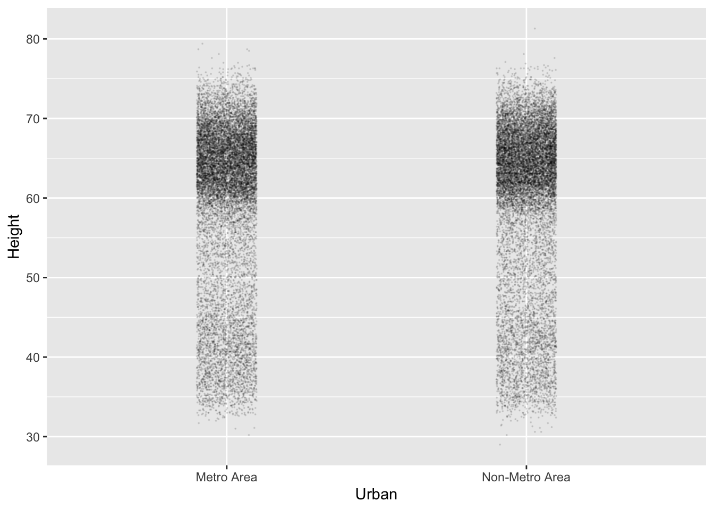
Violin plots to visualize distributions
Still a TON of data! Here’s a great tool I really like for plotting the density of distributions of points like this!
# We can use 'source' to pull bits of code from github, as well as local files
source("https://gist.githubusercontent.com/benmarwick/2a1bb0133ff568cbe28d/raw/fb53bd97121f7f9ce947837ef1a4c65a73bffb3f/geom_flat_violin.R")
heightByUrban + geom_flat_violin(
position = position_nudge(x = .15, y = 0), alpha = .7)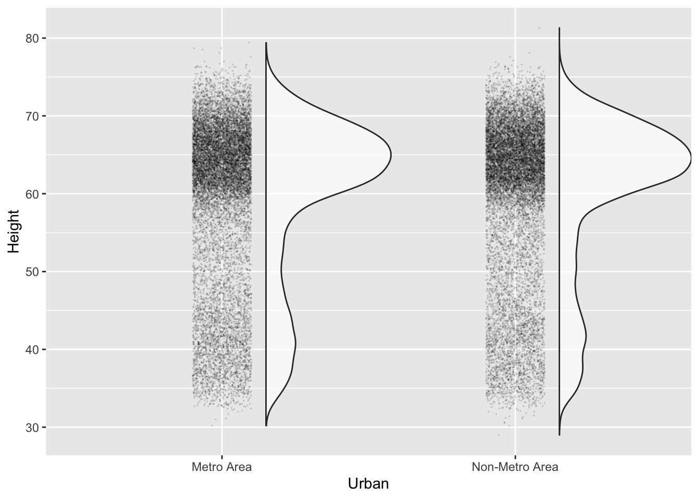
Now, we can really begin to se the skewedness of these weight distributions.
Summary plots
Plotting data points is all well and good, but what if we want to use our plots to summarize distributions? We’ll do that here.
weightByRegion <- ggplot(nhanes, aes(x = Region, y = Weight)) +
stat_summary(fun.y= "mean", geom = "point")## Warning: `fun.y` is deprecated. Use `fun` instead.weightByRegion + ylim(0,400)## Warning: Removed 7 rows containing non-finite values (stat_summary).
# People might want to know how to add a confidence interval
weightByRegionConf <- ggplot(nhanes, aes(x = Region, y = Weight)) +
stat_summary(fun.data = "mean_cl_boot", fun.args=list(conf.int=.95))
weightByRegionConf
It might be useful to look at the summary with the raw data too…just to put any potential region differences in context.
rawPlusSummary <- ggplot(nhanes, aes(x = Region, y = Weight)) +
stat_summary(fun.data = "mean_cl_boot", fun.args=list(conf.int=.95), color = 'red') +
geom_jitter(size = .1, alpha = .1, height = 0, width = .1)
rawPlusSummary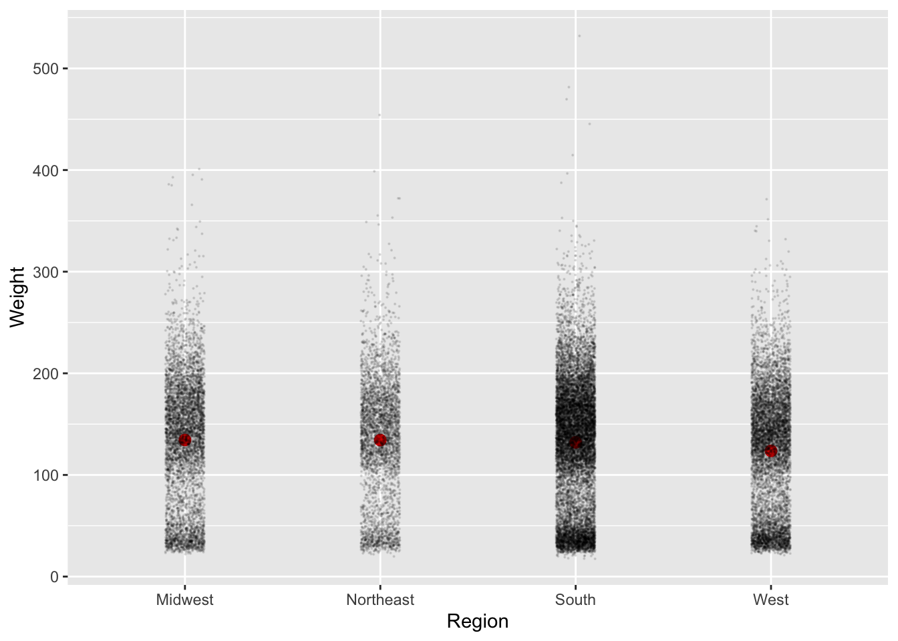
And with the density plots!
rawPlusSummary <- ggplot(nhanes, aes(x = Region, y = Weight)) +
geom_jitter(size = .1, alpha = .1, height = 0, width = .1) +
geom_flat_violin(position = position_nudge(x = .15, y = 0)) +
stat_summary(fun.data = "mean_cl_boot", fun.args=list(conf.int=.95), color = 'red', position = position_nudge(x = .2, y = 0))
rawPlusSummary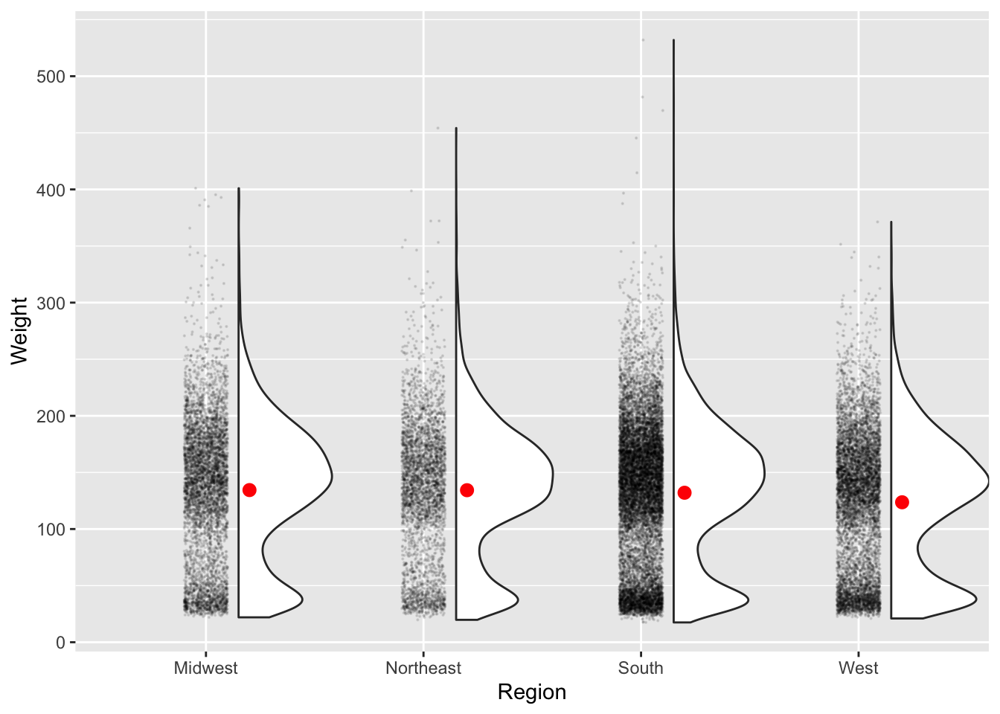
Now that we can visualize the distributions, we can see that weight is bimodally distributed (probably because of the young children in this dataset).
Heatmaps
Sometimes we might want to make a heatmap to look at the value of variable based on a 2d grid of of two other variables.
This is kind of a silly example, but say we wanted to map out the number of observations in our dataset as a factor of region and neighborhood type.
# group the data
nhanesGroup <- nhanes %>%
group_by(Region, Urban) %>%
summarize(Observations = n())## `summarise()` regrouping output by 'Region' (override with `.groups` argument)ggplot(nhanesGroup, aes(x = Urban, y = Region)) +
geom_tile(aes(fill = Observations)) +
scale_fill_gradient(low = "blue", high = "red") +
theme_bw()
Time series plots
Working with a different dataset here
Let’s make up some very simple data on the prices of two different items from 1978-2017.
years <- 1978:2017
item1<- rnorm(40,100,5)
item2 <- 1:40 + rnorm(40,100,5)
# Helpful to put it in long form using pivot_longer
timeFrame <- tibble(years = years, item1 = item1, item2 = item2) %>%
pivot_longer(cols = starts_with('item'), names_to = 'item', values_to = 'price') %>%
mutate(se = runif(n(), 1,5))We can plot the time series using geom_point() and connect the times using geom_line(), coloring by item.
ggplot(timeFrame, aes(x = years, y = price, color = item)) +
geom_point() +
geom_line(aes(lty = item)) +
theme_bw()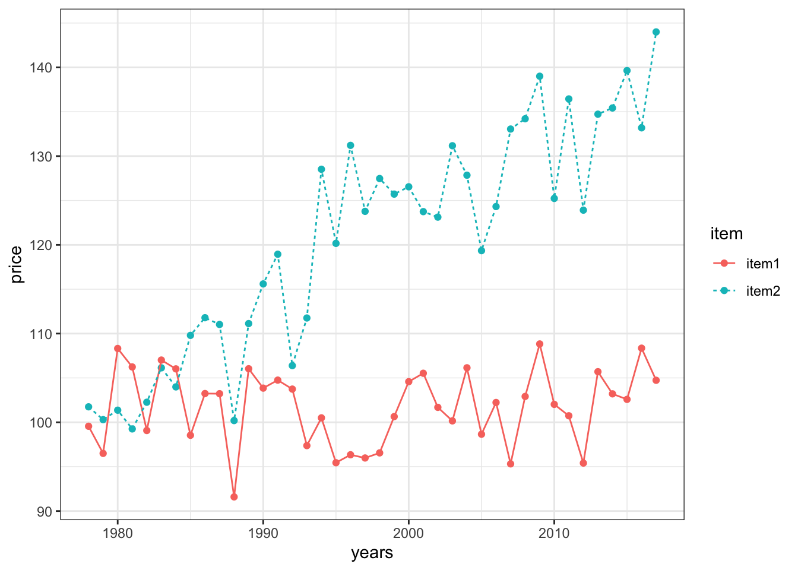
Now, let’s get some representation of our uncertainty into the plot! Notice that there is an included ‘se’ column for the standard error of each observation. Let’s plot error bars of +/- 1 standard error above and below each point.
- We can specificy the range of the errorbars with the
yminandymaxarguments - It can also look nice to set width to 0
ggplot(timeFrame, aes(x = years, y = price, color = item)) +
geom_point() +
geom_line() +
geom_errorbar(aes(ymin = price - se, ymax = price + se), width = 0) +
theme_bw() +
labs(x = 'Year', y = 'Price', color = 'Item')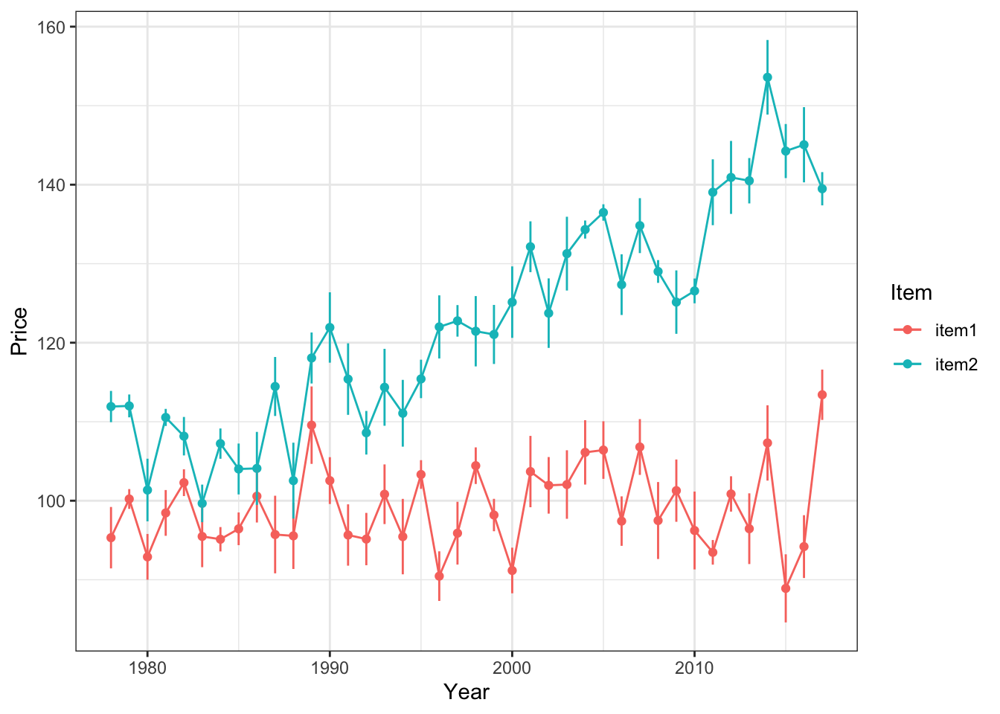
Alternatively, we can use shading to express our uncertainty more continuously. This time, let’s shade the error within 2 standard errors of each measured point.
ggplot(timeFrame, aes(x = years, y = price)) +
geom_point(aes(color = item)) +
geom_line(aes(color = item)) +
geom_ribbon(aes(ymin = price - 2*se, ymax = price + 2*se, fill = item),
alpha = .2, show.legend = F) +
theme_bw() +
labs(x = 'Year', y = 'Price', color = 'Item') +
scale_color_brewer(palette = 'Dark2') +
scale_fill_brewer(palette = 'Dark2')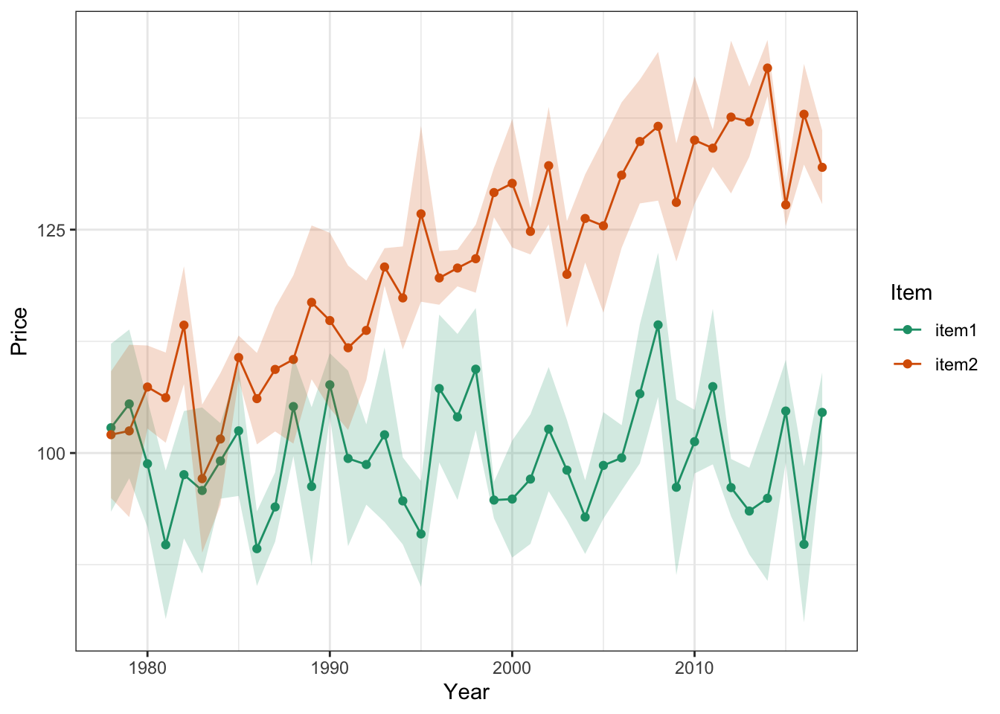
Notice we’ve had to reformat a few calls here to adjust the aesthetic mapping…this happens sometimes when we want certain mappings to apply to ONLY certain parts of the plot. When we put the aes() call inside a geom() call, the mapping applies only to that geometrical object.
Remember! It’s very important to always display the predictive uncertainty along with the estimates or mean predicted by your model. Otherwise, we don’t have any idea of how confident the model’s predictions are.
Fitting Lines to the Data
Let’s say we think there might be a linear relationship between height and weight.
We can use geom_smooth for this and method = 'lm specifically for a linear model
Also level = .95 can specify confidence interval about the estimate at each x value.
heightByWeight <- ggplot(nhanes, aes(x = Height, y = Weight)) +
geom_point(size = .1, alpha = .1) +
stat_smooth(method = 'lm')
heightByWeight## `geom_smooth()` using formula 'y ~ x'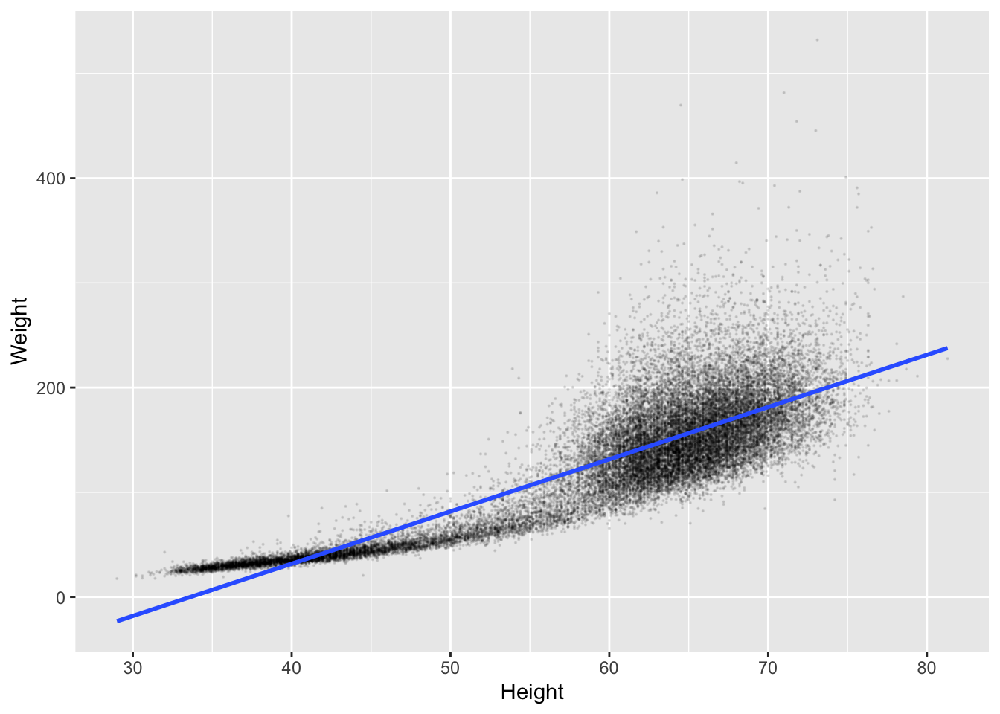
Hmm, this actually looks like it’s giving us some pretty bad predictions. We’re not going to get into the stats of this now, but we can also plot using auto which is a mix of models, and might be a bit smarter.
heightByWeight <- ggplot(nhanes, aes(x = Height, y = Weight)) +
geom_point() +
stat_smooth(method = 'auto', level = .99, alpha = 1, color = 'green', fill = 'red')
heightByWeight## `geom_smooth()` using method = 'gam' and formula 'y ~ s(x, bs = "cs")'
Plot Formatting
Titles and axis labels
The labs() command can be added to ggplot2 with different arguments, lke x, y, or title to make the plots clearer.
heightByUrban + labs(x = 'Neighborhood', y = 'Height in Inches', title = 'Height by Urban Status')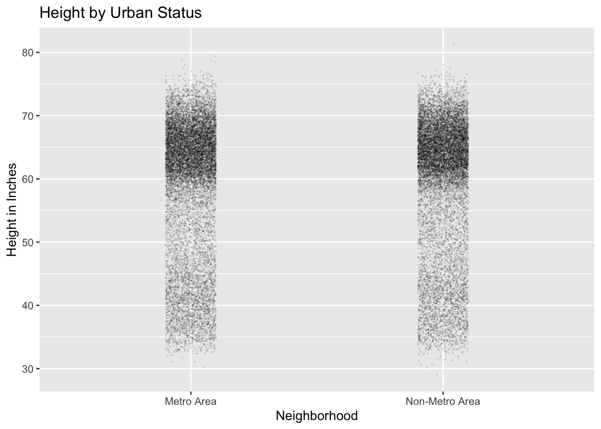
Note, if we want to change labels for FACTORS, not just axes, it’s easier to do that using tidyverse.
Facetting
It’s useful to have several plots in a panel sometimes, not just one.
So for this data set, say we want to plot relationships between height and weight, but by region.
We can do this with facet_wrap('Region').
facetPlot <- ggplot(nhanes, aes(x = Height, y = Weight)) +
geom_point(alpha = .2, size = .1) +
stat_smooth() +
facet_wrap('Region')
facetPlot## `geom_smooth()` using method = 'gam' and formula 'y ~ s(x, bs = "cs")'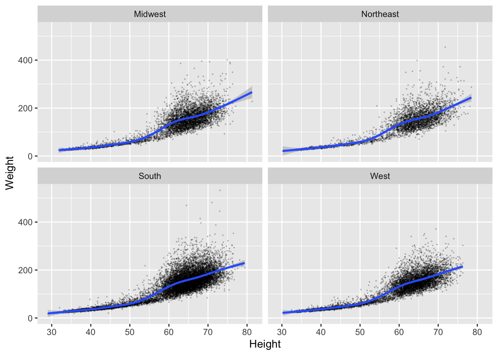
We can even do multiple factors.
multiFacet <- ggplot(nhanes, aes(x = Height, y = Weight)) +
geom_point(alpha = .2, size = .5, aes(color = Urban)) +
stat_smooth() +
facet_grid(Region ~ Urban, scales = 'free_y')
multiFacet## `geom_smooth()` using method = 'gam' and formula 'y ~ s(x, bs = "cs")'
Color
We can color either continuously or discretely, depending on how a variable is represented in R.
We put col = Height into the aes() function because it’s a grouping factor.
Continous Example:
weightByRegion <- ggplot(nhanes, aes(x = Region, y = Weight, col = Height)) +
geom_jitter(width = .1) +
labs(x = 'Region of US', y = 'Weight (lbs)', title = 'Weight by Region')
weightByRegion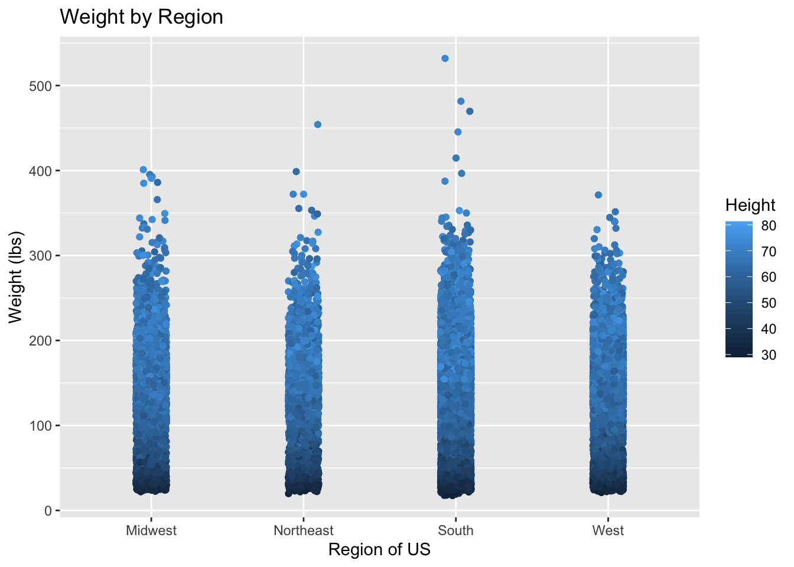
Discrete Example:
discretePlot <- ggplot(nhanes, aes(x = Height, y = Weight, col = Region)) + geom_point()
discretePlot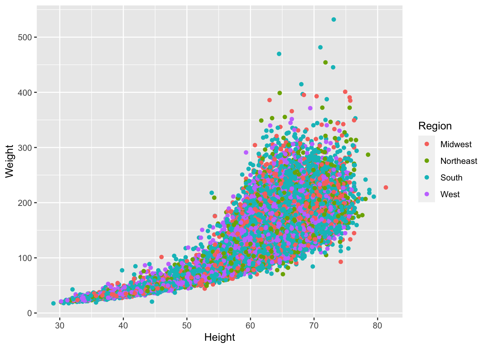
It is EASY to choose your own custom colors (as well as using R presets), but we’re not going to get into that right at this moment.
Themes
We can use themes to make our plots prettier, and also customize the gridlines a lot.
discretePlot + theme_bw()
discretePlot + theme_minimal()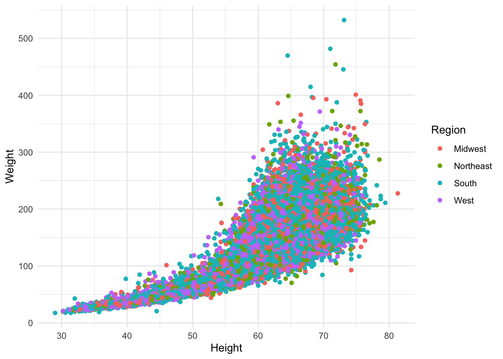
discretePlot+ theme_void()
discretePlot + theme_classic()
facetPlot + theme_bw() + labs(title = 'Weight by Height and Region')## `geom_smooth()` using method = 'gam' and formula 'y ~ s(x, bs = "cs")'
Saving to Files
ggsave() includes arguments for file , plot, dpi, width, and height.
We can use a variety of file formats.
ggsave('newPlotTest.pdf', plot = facetPlot, dpi = 300, width = 5, height = 5)Final Points
Basic ggplot2 will get you a LONG way.
Also, there is much more ggplot2 can do for making your plots very pretty, and also plotting lots of complex models.
Unlike Excel and SPSS, which can often be cranky and difficult to bend to your will in customizing plots, ggplot2 is really easy to work with to make your graph look the way you want.